fgif


FGIF: Create Animated GIFs with Fortran
Description
Just a simple module that can be used to create GIFs and animated GIFs with Fortran. Based on the public domain code at: http://fortranwiki.org/fortran/show/writegif
Compiling
A fpm.toml file is provided for compiling fgif with the Fortran Package Manager. For example, to build:
fpm build --profile release --flag "-fopenmp"
And to run the unit tests:
fpm test --profile release --flag "-fopenmp"
To use fgif within your fpm project, add the following to your fpm.toml file:
[dependencies]
fgif = { git="https://github.com/jacobwilliams/fgif.git" }
Documentation
The latest API documentation can be found here. This was generated from the source code using FORD.
Examples
Mandelbrot
Circle illusion
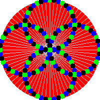
Game of Life
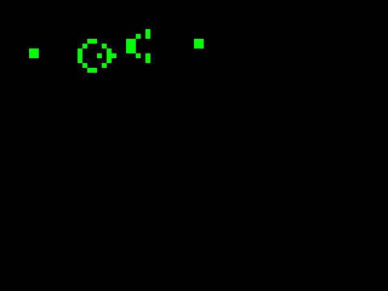
Plasma
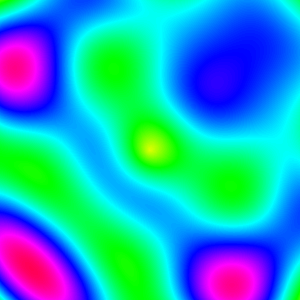
Traveling Salesman Problem
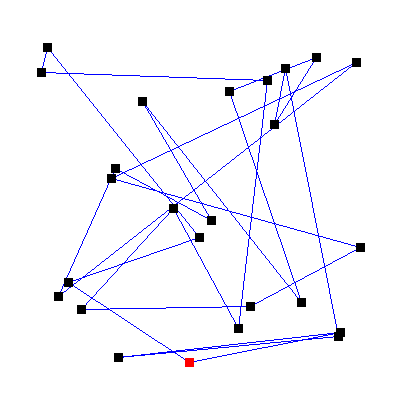
Maze generation and solving
Rotating wireframe cube
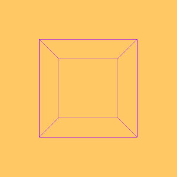
L-system plant growth
N-body gravity simulation
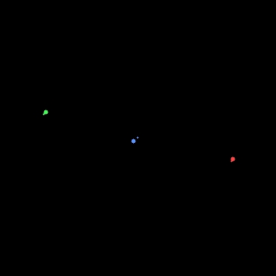
Falling sand
Boids flocking simulation
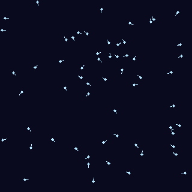
A* pathfinding
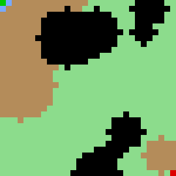
Rotating wireframe sphere
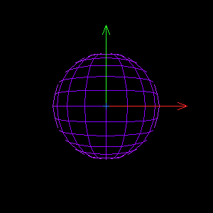
Bouncing balls
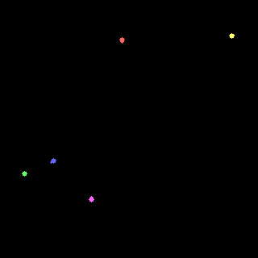
Breakout game
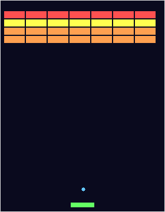